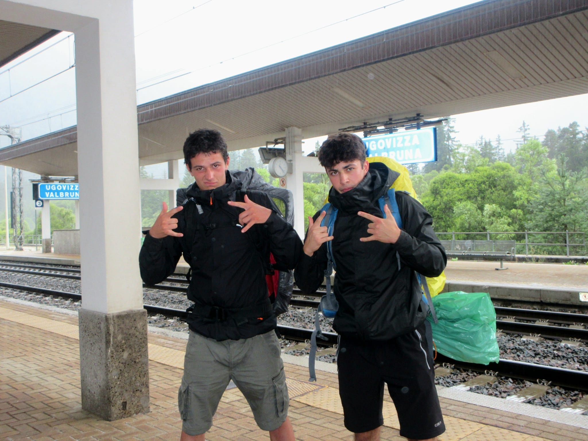
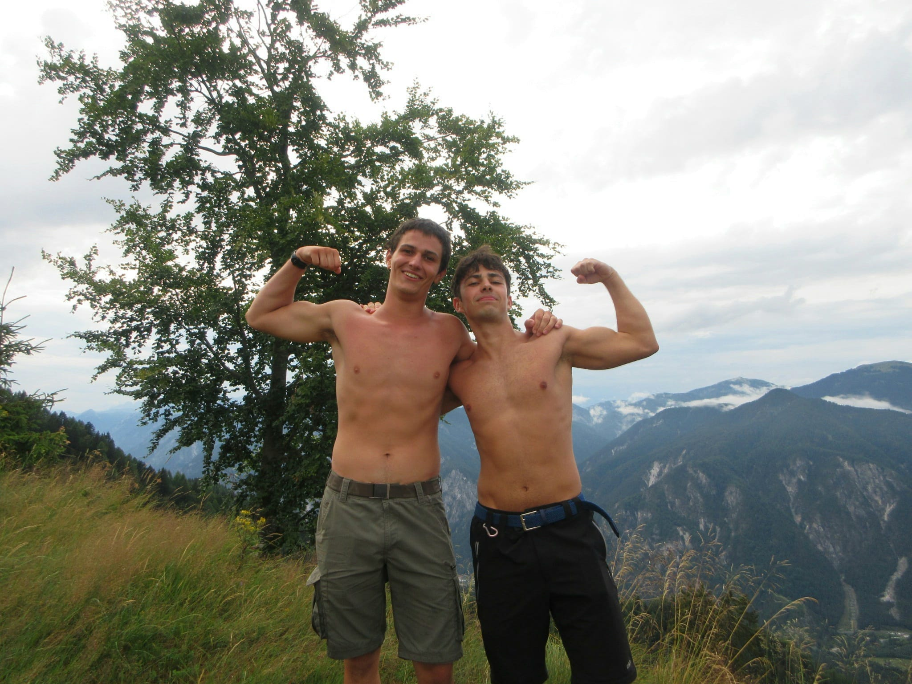
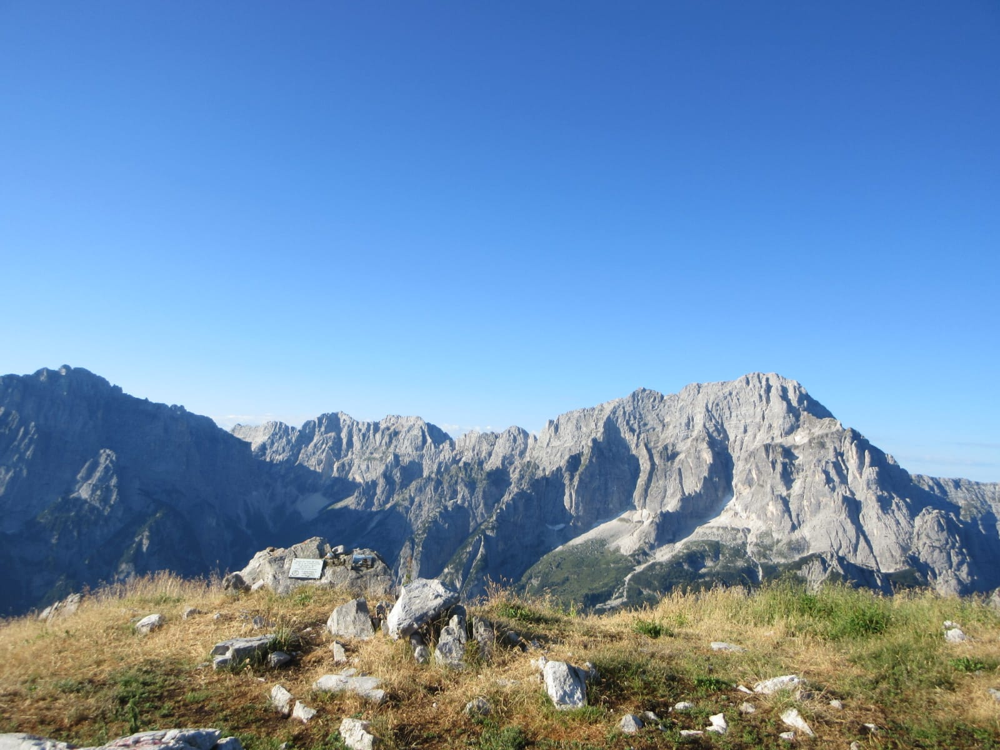
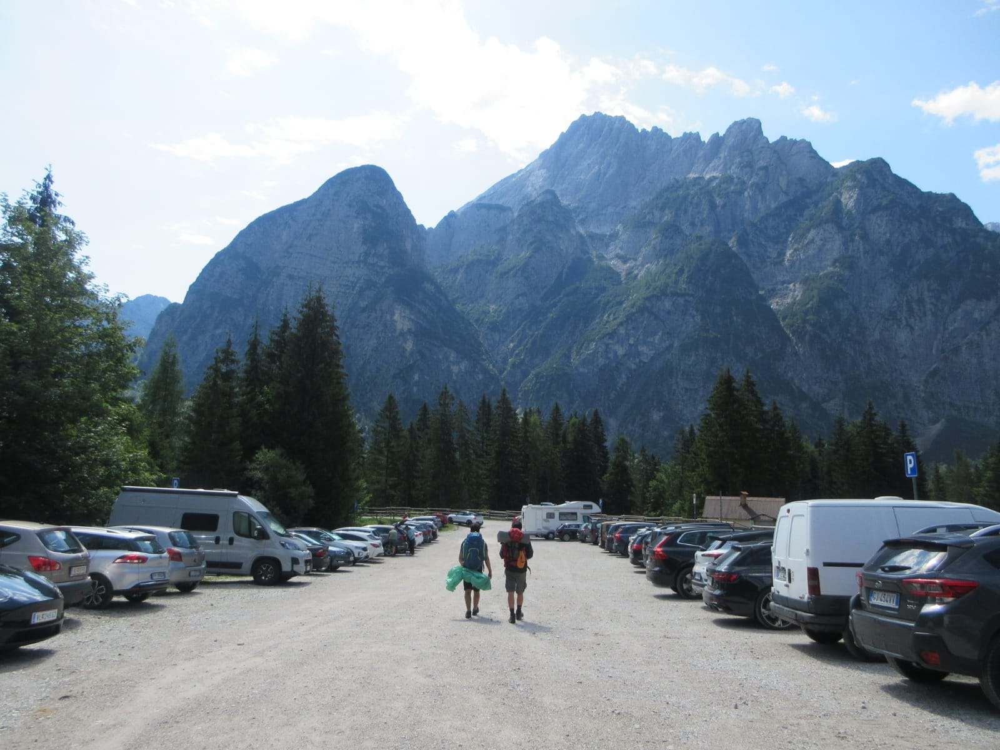

Il diario di bordo della nostra escursione sullo Jôf di Miezegnot: tra risate, pioggia improvvisa, tende nel bosco e panorami indimenticabili.
Siamo partiti nel primo pomeriggio dalla stazione di Cervignano, trascorrendo il viaggio in treno tra partite a carte e discorsi leggeri. Via via che ci avvicinavamo, abbiamo iniziato a notare il nemico nel cielo: un ammasso di nuvole grigie che minacciavano pioggia. Non abbiamo neanche avuto il tempo di scendere dal treno che il rovescio era già iniziato. Essendo ben equipaggiati, siamo comunque partiti per affrontare il primo tratto su strada asfaltata e raggiungere l'imbocco del sentiero.
Attraversando il piccolo paesino di Valbruna abbiamo imboccato il percorso CAI 607 e, per nostra fortuna, poco dopo il cielo si è calmato, permettendoci di procedere un po' più all'asciutto.

Equipaggiati per la pioggia e pronti a partire.Io, Alessia e Michele abbiamo proceduto a ritmo spedito, affrontando quasi 800 metri di dislivello in meno di tre ore. Intorno alle 18:00 siamo arrivati all'altezza del ricovero di Malga Rauna e della Cappella Zita, dove ci siamo concessi una pausa per ammirare il paesaggio e scattare qualche foto. La serenità è durata ben poco: il cielo è tornato a minacciarci e abbiamo scelto di proseguire per un'altra ora alla ricerca di uno spiazzo più in alto.
Ci siamo fermati in una piccolissima radura in mezzo al bosco e abbiamo iniziato di tutta fretta a montare la tenda, giusto in tempo prima che scoppiasse il temporale. Rincuorati dalla buona sorte, ci siamo gustati una cena a base di risotto liofilizzato, pollo e speck tutti scaldati sul fornelletto.

Primo obbiettivo raggiunto: Malga Rauna.Ci siamo svegliati di buon mattino incantati dall'alba che illuminava la vallata. Abbiamo continuato fino a raggiungere la prima delle due cime, il "Piccolo Jôf di Miezegnot" a 1.954 metri, dove ci siamo fermati per fare colazione. Superata poi una piccola sezione attrezzata con la fune, siamo arrivati in cima allo "Jôf di Miezegnot" vero e proprio (2.087 m), centrando l'obiettivo principale della nostra uscita. Qui oltre ad un paesaggio mozzafiato abbiamo anche avuto l'occasione di ammirare alcune trincee storiche.

Finalmente in vetta allo Jôf di Miezegnot!Il meteo durante il ritorno è stato con noi più clemente, ma la strada era ancora molta. Tra discese con i cavi d'acciaio, corse nel bosco, nelle quali io e Michele abbiamo rischiato le caviglie, e un piccolo errore di interpretazione della mappa che ci ha fatto allungare di un'ora, siamo finalmente arrivati a destinazione per l'ora di pranzo. Ad attenderci al Campo Scout, la nostra meta finale, c'erano le nostre famiglie, salite anche loro in montagna.

Sempre più vicini alla fine.La nostra è stata proprio una bella avventura, e questo sito resterà come ulteriore ricordo di ciò che abbiamo passato.